Если неравенство содержит два и более модуля, его удобнее решать методом интервалов.
Процесс решения неравенств с модулем методом интервалов во многом похож на процесс решения уравнений с модулем методом интервалов.
Рассмотрим несколько примеров.
Пример 1. Решить неравенство |7 − x|+|2x + 3|< 16
Решение
Для начала находим такие x, при которых подмодульные выражения 7 − x и 2x + 3 обращаются в ноль. Для этого приравняем эти выражения к нулю и решим простейшие линейные уравнения:
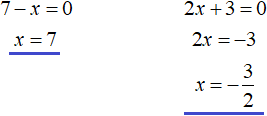
Отметим числа 7 и \(-\frac{3}{2}\) на координатной прямой. Мéньшие числа отмечаем левее, бóльшие правее:
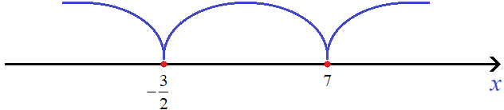
Получили три промежутка:
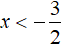
,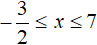
и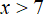
Теперь необходимо решить исходное неравенство на каждом из этих промежутков. Надо иметь ввиду, что на каждом из этих промежутков модули исходного неравенства могут раскрываться по-разному.Решим исходное неравенство на первом промежутке
Далее рассуждаем так:
Если , то при любом значении x на данном промежутке подмодульное выражение 7 − x станет неотрицательным, а значит модуль |7 − x| на промежутке будет раскрываться со знаком плюс. Второй модуль |2x + 3| на промежутке будет раскрываться со знаком минус.
Тогда в результате раскрытия модулей на промежутке исходное неравенство примет вид:
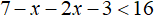
Решим данное неравенство:
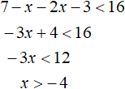
Итак, сейчас мы рассматриваем промежуток . И решив на этом промежутке исходное неравенство мы получили неравенство x > −4.
Теперь начинается самое интересное. Надо выяснить выполняется ли неравенство x > −4 на промежутке . Или задать такой вопрос: «при каких значениях промежутка выполняется неравенство x > −4»
Для наглядности нарисуем еще одну координатную прямую и изобразим на ней решения неравенства x > −4 и
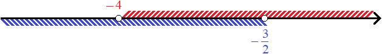
На рисунке видно при каких значениях промежутка выполняется неравенство x > −4. Эти значения лежат в промежутке от −4 до \(-\frac{3}{2}\)
Значит первым нашим решением будет промежуток от −4 до \(-\frac{3}{2}\)
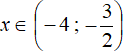
Решим теперь исходное неравенство на промежутке
Если , то при любом значении x на данном промежутке подмодульное выражение 7 − x станет неотрицательным, а значит модуль |7 − x| на промежутке будет раскрываться со знаком плюс. Второй модуль |2x + 3| на промежутке тоже будет раскрываться со знаком плюс.
После раскрытия модулей на промежутке исходное неравенство примет вид:
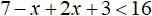
Решим данное неравенство:
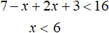
Cейчас мы рассматриваем промежуток . И решив на этом промежутке исходное неравенство мы получили неравенство x < 6. Теперь надо выяснить выполняется ли неравенство x < 6 при
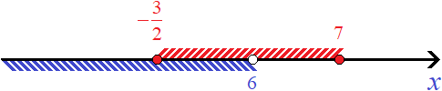
Неравенство x < 6 выполняется не на всём промежутке , а лишь на промежутке \(-\frac{3}{2}\) до 6. Запишем наше второе решение:
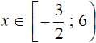
Решим теперь исходное неравенство на последнем промежутке
Если , то при любом значении x на данном промежутке подмодульное выражение 7 − x станет отрицательным, а значит модуль |7 − x| на промежутке будет раскрываться со знаком минус. Второй модуль |2x + 3| на промежутке будет раскрываться со знаком плюс.
Тогда в результате раскрытия модулей на промежутке исходное неравенство примет вид:
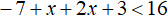
Решим данное неравенство:
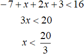
Cейчас мы рассматриваем промежуток . И решив на этом промежутке исходное неравенство мы получили неравенство
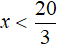
, Теперь надо выяснить выполняется ли неравенство при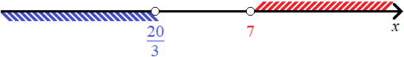
Мы видим, что неравенство не выполняется ни при каких значениях промежутка . Это значит, что исходное неравенство на промежутке решений не имеет.
Действительно, возьмём любое число из промежутка , например, число 9 и подставим его в исходное неравенство. В результате получим неравенство которое не выполняется:
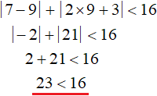
Теперь нужно собрать воедино ответы, которые мы получили на каждом промежутке. Чтобы сделать это, просто объединим промежутки
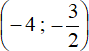
и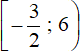
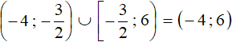
Ответ: (−4 ; 6).
Пример 2. Решить неравенство: 3|x − 2|+|5x − 4| ≤ 10
Решение
Найдём x, при которых подмодульные выражения x − 2 и 5x − 4 обращаются в ноль. Для этого приравняем эти выражения к нулю и решим простейшие линейные уравнения:
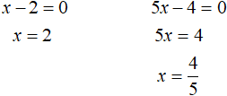
Отметим числа 2 и
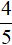
на координатной прямой: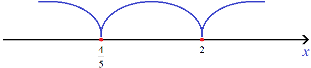
Решим исходное неравенство на промежутке
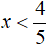
. Оба модуля на данном промежутке раскрываются с минусом: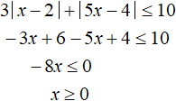
Полученное неравенство x ≥ 0 выполняется не на всем промежутке , а только на промежутке от 0 до
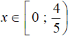
Решим теперь исходное неравенство на следующем промежутке
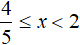
. На данном промежутке модуль|x − 2| раскрываются с минусом, а модуль |5x − 4| с плюсом: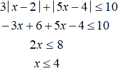
Полученное неравенство x ≤ 4 выполняется на всём промежутке . Значит на промежутке исходное неравенство имеет следующее решение:
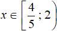
Решим исходное неравенство на следующем промежутке x ≥ 2. Оба модуля на данном промежутке раскрываются с плюсом:
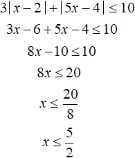
Полученное неравенство
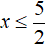
выполняется не на всем промежутке x ≥ 2, а только на промежутке от 2 до \(\frac{5}{2}\)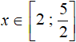
Запишем окончательный ответ. Для этого объединим промежутки
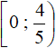
,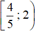
и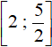
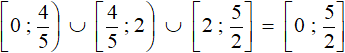
Ответ:
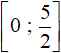
.Задания для самостоятельного решения
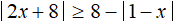
Показать решение
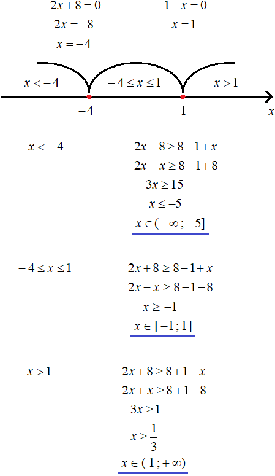
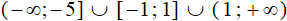
.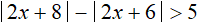
Показать решение
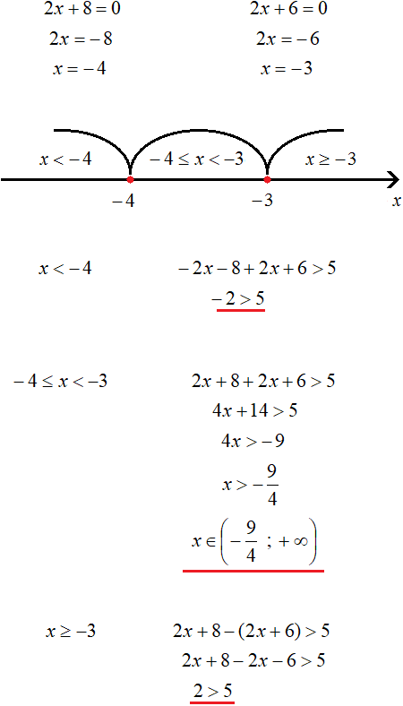
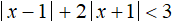
Показать решение
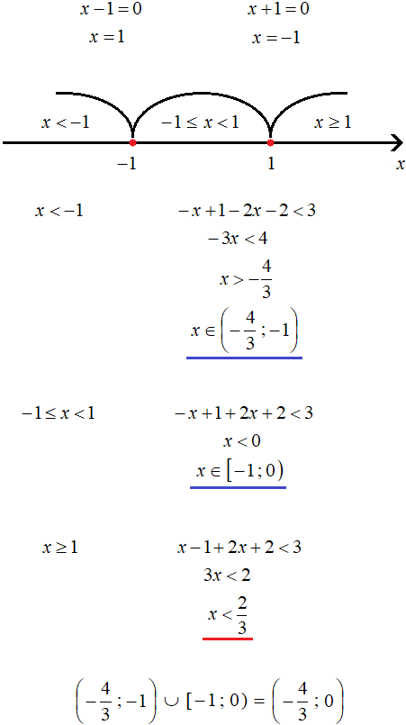
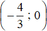
.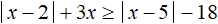
Показать решение
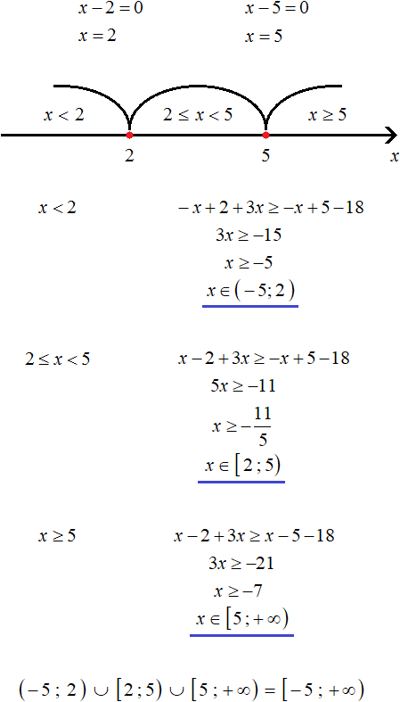
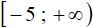
.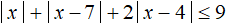
Показать решение
Возникло желание поддержать проект?
Используй кнопку ниже